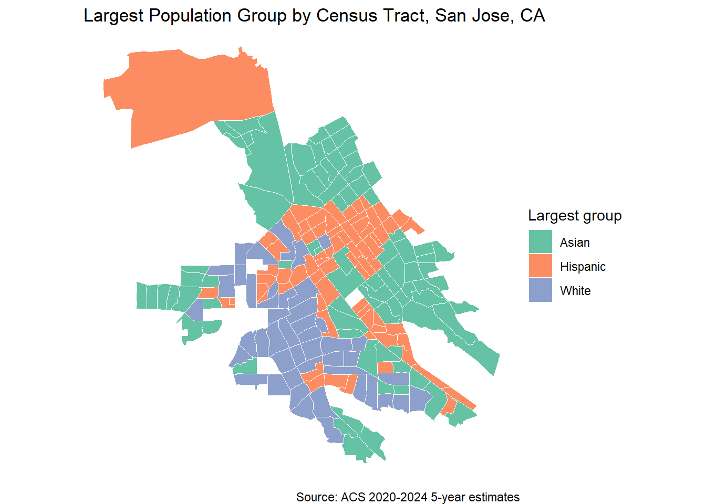
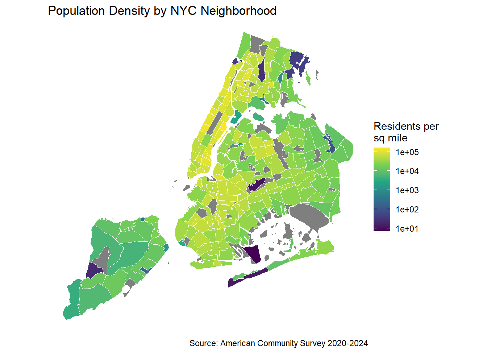
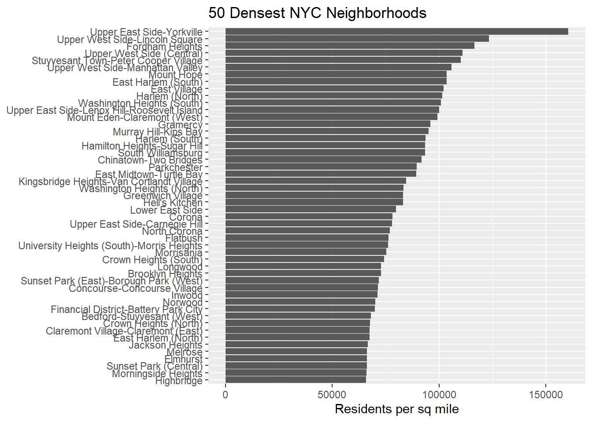
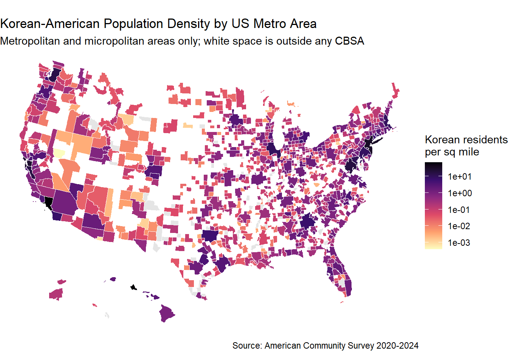

In this mini-project, I intend to demonstrate my skills of data importing, API usage, and file parsing in an analysis of US Census data. For this analysis, I am exploring patterns of population density within the US as well as in New York City, with a slight focus on Korean Americans and ethnic enclaves. In addition to population density, I am also providing a quick overview of the distribution of ancestries in San Jose, CA which eventually somewhat ties in with my final analysis of where Korean Americans live, both in the US and in New York. For my final analysis I provide a little historical background as to why Korean Americans live in certain areas and how they got there, and small tidbits of personal anecdotes.
Data Acquisition and Preparation
Task 1: CBSA-level ACS-1
Code
library(tidycensus)library(tidyverse)library(sf)library(fs)library(scales)library(gt)DATA_DIR <- fs::path("data", "mp03")fs::dir_create(DATA_DIR, recurse =TRUE)# Task 1: CBSA-level ACS-1 (no geometry needed unless you plan to map CBSAs)get_cbsa_pop <-function(year =2024) { cbsa_file <- fs::path(DATA_DIR, "cbsa_pop.csv")if (!fs::file_exists(cbsa_file)) {get_acs(geography ="cbsa",variables =c(korean ="B02018_005", total ="B01003_001"),year = year,survey ="acs1",output ="wide" ) |>select(GEOID, NAME, korean = koreanE, total = totalE) |>write_csv(cbsa_file) }read_csv(cbsa_file, col_types =cols(GEOID =col_character()))}get_ko <-function(year =2024) { ko_file <- fs::path(DATA_DIR, "cbsa_pop_ko.gpkg") # must end in .gpkgif (!fs::file_exists(ko_file)) {get_acs(geography ="cbsa",variables =c(korean ="B02018_005", total ="B01003_001"),year = year,survey ="acs5",output ="wide",geometry =TRUE ) |>select(GEOID, NAME, korean = koreanE, total = totalE) |>write_sf(ko_file) }read_sf(ko_file)}ko <-get_ko()#glimpse(ko)
Task 2: NYC tract-level ACS-5 with geometry
Code
get_nyc_tracts <-function(year =2024) { tract_file <- fs::path(DATA_DIR, "nyc_tracts.gpkg")if (!fs::file_exists(tract_file)) {get_acs(geography ="tract",state ="NY",county =c("005", "047", "061", "081", "085"), # Bronx, Kings, New York, Queens, Richmondvariables =c(korean ="B02018_005", total ="B01003_001"),year = year,survey ="acs5",output ="wide",geometry =TRUE ) |>select(GEOID, NAME, korean = koreanE, total = totalE) |>write_sf(tract_file) }read_sf(tract_file)}cbsa_pop <-get_cbsa_pop()nyc_tracts <-get_nyc_tracts()
Task 3 - acquisition
Code
load_nyc_nta <-function() {library(httr2)# 1. Create 'data/mp03' directory if not already present DATA_DIR <- fs::path("data", "mp03") fs::dir_create(DATA_DIR, recurse =TRUE)# Source URL and local paths nta_url <-"https://s-media.nyc.gov/agencies/dcp/assets/files/zip/data-tools/bytes/neighborhood-tabulation-areas/nynta2020_26c.zip" zip_file <- fs::path(DATA_DIR, "nynta2020_26c.zip") unzip_dir <- fs::path(DATA_DIR, "nynta2020_26c")# 2. Download only if the zip is not already presentif (!fs::file_exists(zip_file)) {request(nta_url) |>req_perform(path = zip_file) }# 3. Unzip only if not already unzippedif (!fs::dir_exists(unzip_dir)) {unzip(zip_file, exdir = unzip_dir) }# 4. Find and read the .shp file as an sf object shp_file <- fs::dir_ls(unzip_dir, recurse =TRUE, regexp ="\\.shp$")[1] nta <- sf::st_read(shp_file, quiet =TRUE)# 5. Drop columns that aren't helpful#nta <- nta |># select(NTA2020, NTAName, BoroName, CDTA2020, CDTAName, geometry)# 6. Return the sf object nta}
Task 4
Code
# Put both layers in the same projected CRS (EPSG:2263 = NY Long Island, feet)# st_join needs matching CRSs, and feet will also help with area calculations later.nta <-load_nyc_nta() |>st_transform(2263)tracts <- nyc_tracts |>st_transform(2263)# Assign each tract to the NTA it overlaps most (largest = TRUE avoids duplicate rows).# Only keep the NTA ID from the NTA table so we don't drag extra columns along.tract_to_nta <-st_join( tracts, nta |>select(NTA2020),join = st_intersects,largest =TRUE)# Drop geometry, then summarize to the NTA levelnta_pop <- tract_to_nta |>st_drop_geometry() |>filter(!is.na(NTA2020)) |>group_by(NTA2020) |>summarize(n_tracts =n(),total_pop =sum(total, na.rm =TRUE),korean =sum(korean, na.rm =TRUE),.groups ="drop" ) |>mutate(korean_pct =if_else(total_pop >0, korean / total_pop, NA_real_))# Reconnect to the NTA geometrynta_pop_sf <- nta |>left_join(nta_pop, by ="NTA2020")
Task 5
Code
load_nyc_pluto <-function(page_size =50000) {library(httr2)# Create 'data/mp03' directory if not already present DATA_DIR <- fs::path("data", "mp03") fs::dir_create(DATA_DIR, recurse =TRUE) pluto_file <- fs::path(DATA_DIR, "nyc_pluto.csv")# 1. Only download if there is no cached copyif (!fs::file_exists(pluto_file)) { base_url <-"https://data.cityofnewyork.us/resource/64uk-42ks.csv"# Only request columns we will need (keeps the download much smaller) keep_cols <-c("bbl", "borough", "bct2020", "landuse", "zonedist1","lotarea", "bldgarea", "comarea", "resarea", "officearea","retailarea", "unitsres", "unitstotal", "numbldgs", "numfloors" )# 2. Page through the API with $limit and $offset pages <-list() offset <-0repeat { page <-request(base_url) |>req_url_query(`$select`=paste(keep_cols, collapse =","),`$order`="bbl", # stable ordering so pages don't overlap or skip rows`$limit`= page_size,`$offset`= offset ) |>req_retry(max_tries =3) |>req_perform() |>resp_body_string() |># read everything as character so column types can't conflict between pagesread_csv(col_types =cols(.default =col_character())) pages[[length(pages) +1]] <- page# A short (or empty) page means we've reached the end of the data setif (nrow(page) < page_size) break offset <- offset + page_sizeSys.sleep(0.5) # be polite to the server }# 3. Combine all pages pluto <-bind_rows(pages)# 4. Save the combined data set for later usewrite_csv(pluto, pluto_file) }# Read from the local copy (types are guessed, except the ID columns)read_csv( pluto_file,col_types =cols(bbl =col_character(),bct2020 =col_character(),.default =col_guess() ) )}pluto <-load_nyc_pluto()nta_names <-load_nyc_nta() |>st_drop_geometry() |>select(NTA2020, NTAName)# Lookup: tract GEOID -> NTA (from Task 4)tract_nta_lookup <- tract_to_nta |>st_drop_geometry() |>select(GEOID, NTA2020)# Add GEOID and NTA2020 to every PLUTO lot, oncepluto <- pluto |>mutate(county_fips =case_match(str_sub(bct2020, 1, 1),"1"~"061", "2"~"005", "3"~"047", "4"~"081", "5"~"085" ),GEOID =paste0("36", county_fips, str_sub(bct2020, 2, 7)) ) |>select(-county_fips) |>left_join(tract_nta_lookup, by ="GEOID")
The tract that has the most office floor area in New York City is tract 1000900. After a quick search, I believe this tract is in the Financial District, which makes sense as FiDi has many highrises that are mostly for office/commercial purposes.
The NTA with the most residential units is MN0801 with a total of 60,306 residential units. MN0801 is the code for Upper East Side-Lenox Hill-Roosevelt Island. This tracks because I have done a little research before about this topic in a previous course. If I remember correctly, former mansion were split up, and the expanding subway lines made it easier for people to move up to Lenox Hill and commute to Midtown and FiDi.
Code
# task 6, q3# NYC census tract has highest population density, # population per square foot of residential space? # population per residential unit?res_minimum <-100tract_housing <- nyc_tracts |>left_join(pluto, by ="GEOID")#tract_housingtract_density <- tract_housing |>st_drop_geometry() |>filter(total >0, resarea > res_minimum, unitsres > res_minimum) |>mutate(pop_per_sqft = total / resarea,pop_per_unit = total / unitsres )# Highest density by residential square footagedensity_by_resarea <- tract_density |>slice_max(pop_per_sqft, n =5) |>select(GEOID, NAME, total, resarea, pop_per_sqft)#density_by_resarea# Highest density by residential unitdensity_by_unitsres <- tract_density |>slice_max(pop_per_unit, n =5) |>select(GEOID, NAME, total, unitsres, pop_per_unit) |>distinct()#density_by_unitsrestop_density_resarea <- density_by_resarea |>slice_max(pop_per_sqft) |>pull(NAME)top_density_resarea
I made some filters for this prompt. I filtered the total to be greater than 0 to filter for tracts that residents actually live in. Residential space and residential units also must exists, so I had to filter for tracts that have res space and res units greater than 0. The original results using the aforementioned filters of “greater than 0” showed tracts with res units of 1 which is probably not likely, so I decided to increase both resunits and resarea to 100. The results of which are displayed in the table above.
The densest tract by population per sq foot of residential space is Census Tract 149; New York County; New York and the densest tract by population per residential units was Census Tract 245; New York County; New York.
Using censusreporter.org, Census Tract 149; New York County; New York is right in the middle of Washington Heights, bounded by Fort Washington Ave., Saint Nicholas Ave, W 158th st, and W 165th st, and Census Tract 245; New York County; New York is Lincoln Center, bounded by Amsterdam Ave, Central Park West, W 66th st, and W 62nd st.
The final results I got could have been slightly skewed by my filters, but these tracts still seem to make sense. Both tracts are quite dense in general, but residential square footage in Washington Heights is probably small, and there are probably less residential units in Lincoln Center.
Code
korean_metros <- ko |>mutate(across(c(korean, total), as.numeric)) |>rename(`Korean Population`= korean) |>rename(`Total Population`=total) |>select(-GEOID) |>st_drop_geometry() |>filter(str_detect(NAME, "Metro")) |>mutate(`Share of Koreans %`=`Korean Population`/`Total Population`) |>arrange(desc(`Share of Koreans %`)) ko_metros <- korean_metros |>mutate(`Korean Population`=comma(`Korean Population`), `Total Population`=comma(`Total Population`),`Share of Koreans %`=percent(`Share of Koreans %`, accuracy=.01)) |>head(5)ko_metros |>gt()
NAME
Korean Population
Total Population
Share of Koreans %
Urban Honolulu, HI Metro Area
42,534
1,001,146
4.25%
Los Angeles-Long Beach-Anaheim, CA Metro Area
343,006
12,974,487
2.64%
San Jose-Sunnyvale-Santa Clara, CA Metro Area
43,894
1,969,337
2.23%
Seattle-Tacoma-Bellevue, WA Metro Area
85,648
4,061,920
2.11%
Kahului-Wailuku, HI Metro Area
3,045
164,589
1.85%
The table above shows the five metro areas that have the largest share of Koreans. The shares was calculated by dividing the estimate of Koreans in the metro area by the total population of the metro area. I was suspicious to not see the NY metro area in the top 5, as I thought I would have to filter out NY, so I increased the head amount to 25 and while the population of Koreans in NY metro was the second highest (after Los Angeles), the share of Koreans was too low to have made it onto the top 5 metros table.
Code
# q5 describe the distribution of ancestries # in a large non-NYC city of your choosing from the previous questionsjc <-get_acs(geography="place",state ="CA",variables =c(Hispanic ="B03002_012",White ="B03002_003",Black ="B03002_004",Native_American ="B03002_005",Asian ="B03002_006",Pacific_Islander ="B03002_007",Other ="B03002_008",Two_or_more ="B03002_009" ),year =2024) |>filter(str_detect(NAME, "San Jose city")) |>select(-moe, -GEOID)sjc |>mutate(estimate =comma(estimate)) |>gt()
NAME
variable
estimate
San Jose city, California
White
220,650
San Jose city, California
Black
27,099
San Jose city, California
Native_American
2,248
San Jose city, California
Asian
388,267
San Jose city, California
Pacific_Islander
4,530
San Jose city, California
Other
5,082
San Jose city, California
Two_or_more
37,274
San Jose city, California
Hispanic
304,988
The table above shows the distribution of ancestries in San Jose, California. I chose San Jose because as a San Francisco native, I feel most qualified to make observations of the different ancestries that make up the Bay Area, and I have visited relatives that live in and around San Jose many times. The ACS data seems accurate: White, Asian, and Hispanic are definitely the largest groups in the Bay.
Since the Bay Area is so large and there are so many different ethnicities, I wanted to further breakdown the Asian American group, as I am more familiar with the Asian community and because the tech industry in the Bay attracts Asians born in the US as well as those born overseas.
As the table above shows, the Vietnamese population in SJ is higher than most other Asian populations. If I remember correctly, the Vietnamese population in SJ is the highest in the country. Out of curiosity, I wanted to map out the ancestry of San Jose residents.
The map below shows the largest population groups by census tract in San Jose.
Code
# Q 5 continued; map of largest population groups in San Jose, CAvars <-c(Hispanic ="B03002_012",White ="B03002_003",Black ="B03002_004",Native_American ="B03002_005",Asian ="B03002_006",Pacific_Islander ="B03002_007",Other ="B03002_008",Two_or_more ="B03002_009", total ="B03002_001")# Tracts in Santa Clara County (where San Jose is), with geometrysj_tracts <-get_acs(geography ="tract", state ="CA", county ="Santa Clara",variables = vars, year =2024, output ="wide", geometry =TRUE)# San Jose city boundarysj_boundary <-get_acs(geography ="place", state ="CA", variables ="B03002_001",year =2024, geometry =TRUE) |>filter(str_detect(NAME, "San Jose city"))# Keep tracts whose center point falls inside San Joseinside <-st_within(st_point_on_surface(sj_tracts), sj_boundary, sparse =FALSE)[, 1]sj_tracts <- sj_tracts[inside, ]# Find the largest group in each tractgroups <-c("Hispanic", "White", "Black", "Asian")counts <-st_drop_geometry(sj_tracts)[paste0(groups, "E")]sj_tracts$largest_group <- groups[max.col(counts, ties.method ="first")]ggplot(sj_tracts) +geom_sf(aes(fill = largest_group), color ="white", linewidth =0.1) +scale_fill_brewer(palette ="Set2", name ="Largest group") +labs(title ="Largest Population Group by Census Tract, San Jose, CA",caption ="Source: ACS 2020-2024 5-year estimates" ) +theme_void()

The results seem accurate as, again, these three groups are the largest racial groups in the South Bay (which includes San Jose).
The large green patch shows there is a large Asian American population in the area and I know for sure this is accurate as I have relatives that live in a small town just outside of the green patch called Milpitas, a town mostly made up of detached single family homes and strip malls occupied by Chinese and Vietnamese restaurants and supermarkets.
Another Asian majority tract I also have relatives in is the one that’s on the far west side. They used to live in another small town that borders the green tract called Cupertino, which is famously the headquarter of Apple.
A quick search confirms that these both Milpitas and Cupertino do indeed have an Asian residence majority of at least 70%, while the two green tracts within San Jose are around 45-55% Asian majority. It’s interesting to see that the suburban town just outside the city of San Jose have larger Asian population than within the city itself.
Code
koreans_us <-get_acs(geography="us",variables =c(ko ="B02018_005", total ="B01003_001"), year =2024, output="wide") |>mutate(percent_koreans_in_us = koE / totalE)percent_ko_us <- koreans_us |>pull(percent_koreans_in_us) |>percent(accuracy=.001)koreans_ny <-get_acs(geography="state",state="NY",variables =c(ko ="B02018_005", total ="B01003_001"), year =2024, output="wide") |>mutate(percent_koreans_in_ny = (koE) / totalE)percent_ko_ny <- koreans_ny |>pull(percent_koreans_in_ny) |>percent(accuracy=.001)percent_ko_us
[1] "0.616%"
Code
percent_ko_ny
[1] "0.734%"
The percentage of Koreans that live in the US is 0.616% and the percentage of Koreans that live in New York state is 0.734%. The percentage of Koreans in NY state are only slightly higher than in the US. I was already expecting a low percentage for NY, because the percentage of Koreans in the NY metro was also quite low so it was not a surprise to me.
Code
pluto_tracts <- pluto |>filter(!is.na(GEOID)) |>group_by(GEOID) |>summarize(across(c(unitsres, unitstotal, resarea, comarea, officearea, bldgarea), \(x) sum(x, na.rm =TRUE)),max_floors =max(numfloors, na.rm =TRUE),.groups ="drop" ) |>mutate(max_floors =if_else(is.infinite(max_floors), NA_real_, max_floors))# Rebuild tract_housing so it picks up the corrected tabletract_housing <- nyc_tracts |>left_join(pluto_tracts, by ="GEOID")library(ggplot2)library(ggpubr)library(scales)plot_data <- tract_housing |>st_drop_geometry() |>filter(total >0, resarea >0, unitsres >0)ggplot(plot_data, aes(x = total, y = resarea)) +geom_point(alpha =0.3) +geom_smooth() +stat_cor(method ="pearson") +scale_x_continuous(labels =label_comma()) +scale_y_continuous(labels =label_comma()) +labs(x ="Tract population", y ="Residential floor area (sq ft)")
Looking at both plots, it seems that there is a rather strong positive linear relationship between both Residential Units and Tract population, and residential square footage and tract population, since both R values are just over 0.7. Of course there are outliers that could possibly skew the data.
The plot of residential floor area by tract population has two visible outliers. One tract has over 10 million square feet of residential area with a tract population of a little over 5,000. The tract for that outlier is MN0601, which covers Pelham Bay–Country Club–City Island. Another possible outlier is a tract with over 1.6963^{4} population and a residential area of 8.367942^{6}. The NTA of this tract is MN0601, which is Stuytown-PCV. So the Pelham Bay tract is among the least dense tracts in the city while the Stuytown tract is one of the densest, if not, THE densest. These two tracts show up again in the other plot. Overall, both plots look quite similar to each other, with similar possible outlier tracts.
Code
# 8 What are the NTAs with highest buildings?min_floors <-25# tracts with highest buildingstall_building_tracts <- pluto |>select(borough, bct2020, numfloors) |>filter(numfloors > min_floors) |>group_by(bct2020) |>summarize(total =n()) |>arrange(desc(total)) |>head(10)# Tall buildings by NTAtall_buildings_nta <- pluto |>filter(numfloors > min_floors) |>count(NTA2020, sort =TRUE) |>head(10)tall_buildings_nta
For this prompt, I made up 25 to be the minimum number of floors to be considered a tall building. The table above shows the NTAs with the most buildings that have at least 25 floors. MN0502 is the NTA with 227 buildings with 25 floors or more. A quick search reveals that this NTA is Midtown-Times Square in Manhattan, which is definitely not a surprise and in fact assuages all of my worries and doubts as Midtown-Times Square has a high concentration of tall buildings with at least 25 floors. The second NTA with the most buildings over 25 floors is MN0101 with 130 buildings over 25 floor. MN0101 is Financial District-Battery Park City.
Code
# 9 Visualize how population density varies across NYC?sqft_to_sqmi <-27878400nta_density <- nta_pop_sf |>mutate(area_sq_mi =as.numeric(st_area(geometry)) / sqft_to_sqmi,pop_density = total_pop / area_sq_mi )#nta_densityggplot(nta_density) +geom_sf(aes(fill = pop_density), color ="white", linewidth =0.1) +scale_fill_viridis_c(trans ="log10", name ="Residents per\nsq mile") +labs(title ="Population Density by NYC Neighborhood",caption ="Source: American Community Survey 2020-2024" ) +theme_void()

Code
nta_density |>st_drop_geometry() |>slice_max(pop_density, n =50) |>ggplot(aes(x = pop_density, y =reorder(NTAName, pop_density))) +geom_col() +labs(title ="50 Densest NYC Neighborhoods", x ="Residents per sq mile", y =NULL)

Code
top_density <- nta_density |>slice_max(pop_density, n =50)ggplot() +geom_sf(data = nta_density, fill ="grey90", color ="white", linewidth =0.1) +geom_sf(data = top_density, aes(fill = pop_density), color ="white", linewidth =0.2) +scale_fill_viridis_c(name ="Residents per\nsq mile") +labs(title ="50 Densest NYC Neighborhoods",caption ="Source: American Community Survey 2020-2024" ) +theme_void()
According to the map, Yorkville is the densest NYC neighborhood, which is not surprising given how many residents there are, packed into such a small area of land. It’s also not surprising to see Two Bridges, Jackson Heights, and Sunset Park on the map. A quick search confirmed my hypothesis that immigrants tend to stay within neighborhoods that are largely settled by the same immigrant groups, and that immigrants also tend to live in multigenerational homes, or even live in a household with multiple families, thus creating denser living areas.
At first, I thought I would see Flushing on the map, but thinking about it some more, Flushing is not very dense outside of downtown. It’s interesting that Times Square is not one of the 50 densest neighborhoods. Even though hundreds of thousands of people pass through that area, the number of residents who actually live in the area is much lower in comparison. Even though the Times Square area is small, the number of residents is also quite small.
The number of New Yorkers that live in “primarily commercial” areas is 829,818. In my opinion I think this number seems realistic. After a quick search of how many residents live in Times Square (around 6,000) and the surrounding area including Theatre District is double that amount. (I used Times Square as my benchmark because TS is in my opinion the most commercial and least livable area in the city. Even former office building strongholds such as the Financial District are starting to become more residential, with the rise of office to residential conversions.)
For this prompt I also made a table of the top ten most commercial areas to put into perspective what areas these 829,818 New Yorkers would possibly live in. I made sure to filter for areas that have more commercial spaces (commercial space, office space, and retail space) than residential space, and also to filter for areas that have residential areas greater than 0 (because how else would someone live in that area if the residential area (resarea) were 0?) I used the same filters when finding the number of NYers that live in commercial areas.
Final Insights and Deliverable
Although I am not Korean, I find the Korean diaspora in the US to be interesting. South Korea was/is one of the Four Asian Tigers, the developed Asian economies of Hong Kong, Singapore, South Korea, and Taiwan [1]. From the 1960s to the 1990s, these regions underwent rapid industrialization and maintained high growth rates [1]. However, the Internation Montary Fund crisis of Throughout the early decades of immigration, the various reasons to immigrate to the US were pretty much the same as the Chinese had: economic reasons, and then later on, political unrest from Japanese invasion and occupation. Below is a table of the top 5 metro areas in the US with the highest share of Korean Americans.
Code
ko_metros |>gt()
NAME
Korean Population
Total Population
Share of Koreans %
Urban Honolulu, HI Metro Area
42,534
1,001,146
4.25%
Los Angeles-Long Beach-Anaheim, CA Metro Area
343,006
12,974,487
2.64%
San Jose-Sunnyvale-Santa Clara, CA Metro Area
43,894
1,969,337
2.23%
Seattle-Tacoma-Bellevue, WA Metro Area
85,648
4,061,920
2.11%
Kahului-Wailuku, HI Metro Area
3,045
164,589
1.85%
Code
ko_in_hi <- ko_metros |>filter(str_detect(NAME, "Honolulu")) |>pull(`Share of Koreans %`)ko_in_la <- ko_metros |>filter(str_detect(NAME, "Los Angeles")) |>pull(`Share of Koreans %`)
With a share of 4.25% of Korean Americans my hypothesis of why the Honolulu metro area is the metro areas with the largest shares of Korean Americans is that from the late 1800s to the early 1900s, Koreans (and Chinese) immigrants moved to the US and Hawaii to work as laborers on farms, plantations, mines, and railroads [2], and these are the descendants of the original immigrants that moved during the first wave of immigration. That may also explain why the 5th metro area with the most shares of Koreans is Kahului-Wailuku.
During the 1950s, Koreans moved due to the Korean War. Those who moved included “war brides”, the wives of US servicemen, and adoptees [2]. The war left many infants and children displaced or orphaned. Multiple Immigration and Nationality Acts passed during the 1950s and 60s also opened up more opportunities for Asian Americans [2]. My hypothesis for the widespread movement of Korean Americans is that because of the increased opportunities for Asian Americans and the subsequent upward mobility allowed for those with the means to move out of ethnic enclaves in urban centers and into suburbs. Korean Americans make up 0.616% of the US population.
As the map below shows, while urban centers are more densely populated by Korean Americans, there are still sizable amounts of Koreans residing in suburbs throughout the US. However it seems clear that they prefer certain regions, namely the west coast of California and the Pacific Northwest, Chicago, and the Eastern Seaboard.
Code
# US map: Korean population density by metro area (CBSA)library(lwgeom)ko_density <- ko |>filter(!str_detect(NAME, ", PR"))ko_density$area_sq_mi <-as.numeric(st_area(ko_density)) /2589988ko_density$korean_density <-if_else(ko_density$korean >0, ko_density$korean / ko_density$area_sq_mi,NA_real_)ko_density <- tigris::shift_geometry(ko_density)ggplot(ko_density) +geom_sf(aes(fill = korean_density), color ="white", linewidth =0.05) +scale_fill_viridis_c(option ="magma", trans ="log10", direction =-1,na.value ="grey90", name ="Korean residents\nper sq mile"#breaks = c(10, 100, 1000, 10000)#labels = scales::label_comma() ) +labs(title ="Korean-American Population Density by US Metro Area",subtitle ="Metropolitan and micropolitan areas only; white space is outside any CBSA",caption ="Source: American Community Survey 2020-2024" ) +theme_void()

Of these regions, I want to discuss more about New York City because despite having a dedicated Koreatown in the middle of Manhattan and smaller enclaves throughout the metro area, including Murray Hill in Queens, the share of Koreans in NY is actually quite low compared to Los Angeles. The share of Koreans in NY is 0.734% while LA has a share of 2.64%. I find this so interesting because LA also has a dedicated Koreatown but it’s much less exciting and suffers from suburban sprawl.
The map below of Korean American population density in New York highlights the compactness of the Korean population in NYC and the areas they tend to live in. Unsurprisingly Flushing and Murray Hill are two of the densest areas. What is interesting is that Koreans seem to live in the more affluent areas, such as Northeastern Queens in Bayside and Auburndale, and North Brooklyn in Brooklyn Heights and Park Slope. There are also areas that are not necessarily affluent but expensive areas, such as Long Island City, Flushing, and most of Manhattan south of West Harlem, besides the usual suspects of healthcare, finance, and tech workers, my hypothesis for this is that Koreans that moved to the US after the Immigration laws were loosened in the 1960s, opened businesses as a way toward economic stability [3][4].
This kind of ties in with my analysis of the Asian American population in San Jose: that the suburbs seem to attract or appeal to Asians. It could also be that the suburbs have more Asians because most people move out to the suburbs when they have a growing family. Or maybe, in order to afford to move out of the city and into a nicer, more expensive area, relatives within the same family buy and live in the same home, which is actually what my parents and their sibling (my aunts and uncle) did in San Francisco back in the 1990s.
Code
korean_density <- nta_pop_sf |>mutate(area_sq_mi =as.numeric(st_area(geometry)) /27878400,korean_density =if_else(korean >0, korean / area_sq_mi, NA_real_) )ggplot(korean_density) +geom_sf(aes(fill = korean_density), color ="white", linewidth =0.1) +scale_fill_viridis_c(option ="magma", trans ="log10", direction=-1,na.value ="grey90", name ="Korean residents\nper sq mile" ) +labs(title ="Korean-American Population Density by NYC Neighborhood",subtitle ="Grey areas have no Korean residents recorded",caption ="Source: American Community Survey 2020-2024" ) +theme_void()
Claude was used for most of tasks 1 to 5. Claude was used for completing prompts, joining tables, and refining code in the prompts in task 6, and the maps in Final Deliverable. Gemini was used for miscellaneous formatting.